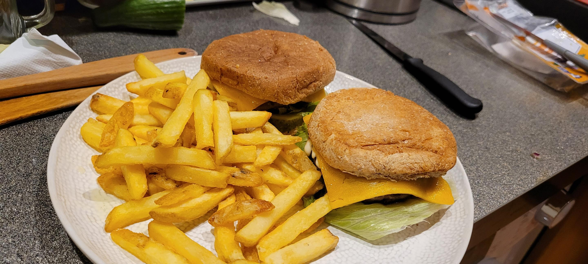

My homemade burgers recipe
This page is a tutorial on how to make my burgers recipe. I am no expert cook so this recipe will be very simple. It's nothing fancy but I do find these
burgers delicious and juicy. This recipe makes 2 burgers. I didn't have a photo ready for this so I just used a random picture from my gallery.
Ingredients
- 4 burger buns
- 2 patties
- A red onion
- A pickle
- Some iceberg lettuce
- Burger sauce
- Sliced cheddar cheese or american cheese
- Skin-on fries
Steps
-
The first step is to throw a bunch of fries into an air frier. set the air frier to max temperature and set the timer for somewhere around
20-25 minutes, I like to give the fries as much time as possible to cook so that when they are done, they have a golden-orange-yellow colour and
have a delicious crunch to it. Just take it out when you are done with everything else. Make sure they don't burn though.
-
Put the pan on the stove and set the heat to 7. pour some olive oil on there and then place your patties on the pan.
Just flip when it feels right really, thats the easiest option for me and works all the time.
-
Once your patties are done, you can start building your burger. Starting from the bottom, pour a bunch of diced onion.
Then you want to place down a bunch of sliced pickles. Place a big leaf of iceberg lettuce, or just keep placing leaves until it is entirely
covered. Then place the patty. Pour some burger sauce and place a slice of cheddar or american cheese. Place your top bun and your burgers are finished.
You can also choose to microwave them for a bit so the entire thing is warm, too.
-
Take out your fries from the air frier. They should be finished by now, it really depends how you like them cooked and how much you procrastinate
while making this recipe. Put your burgers and fries on a plate. You have finished making burgers and fries.
You have finished the recipe. Press the home button to check out other recipes.
Back to home page